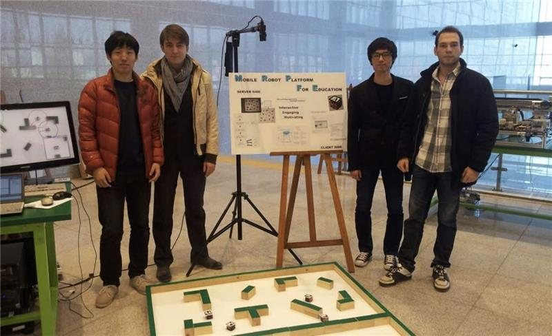
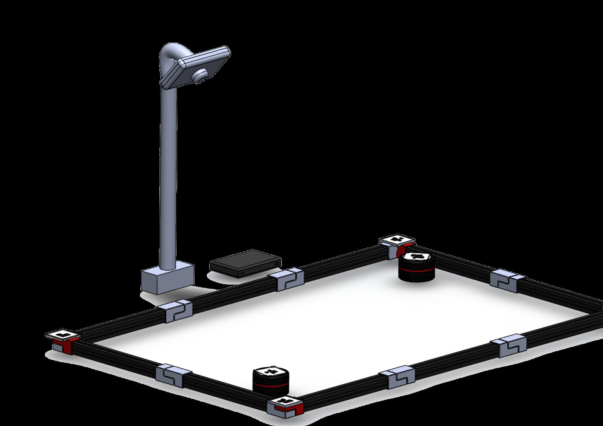
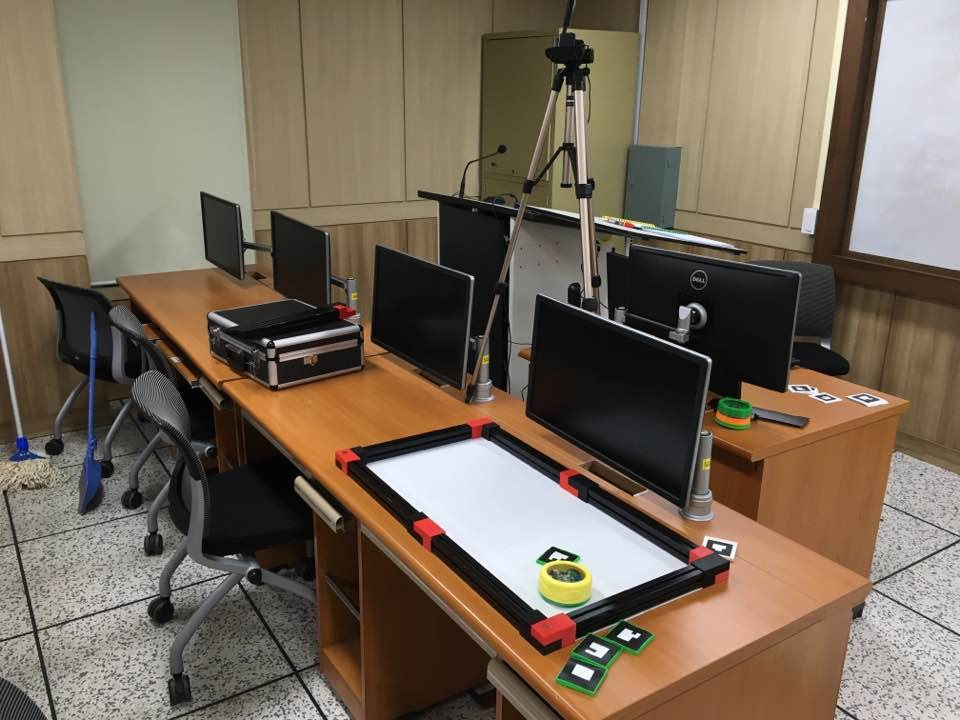
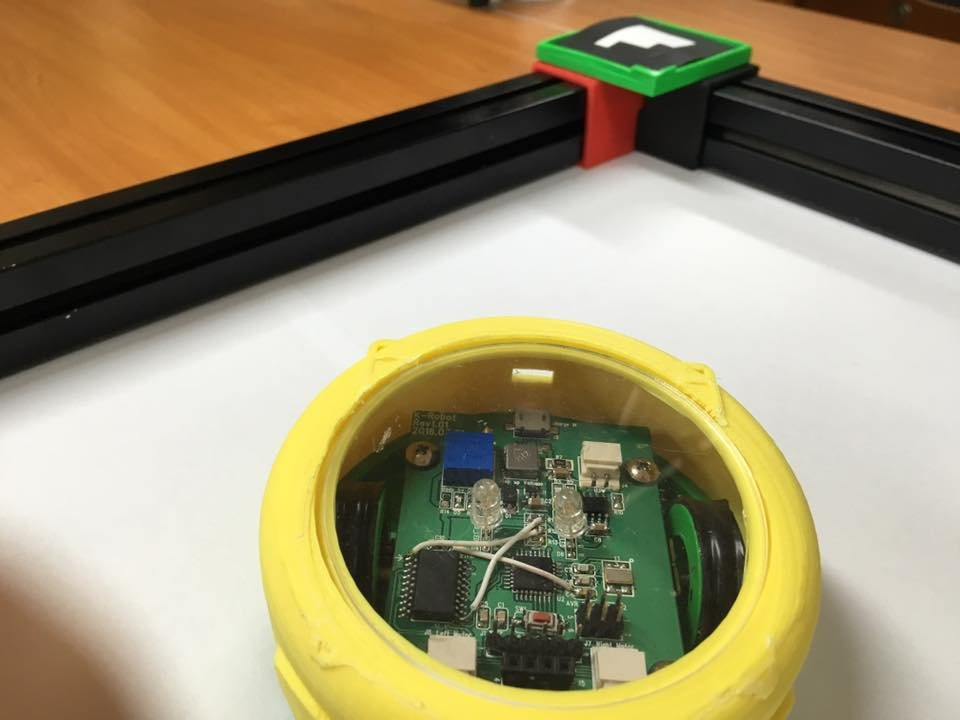
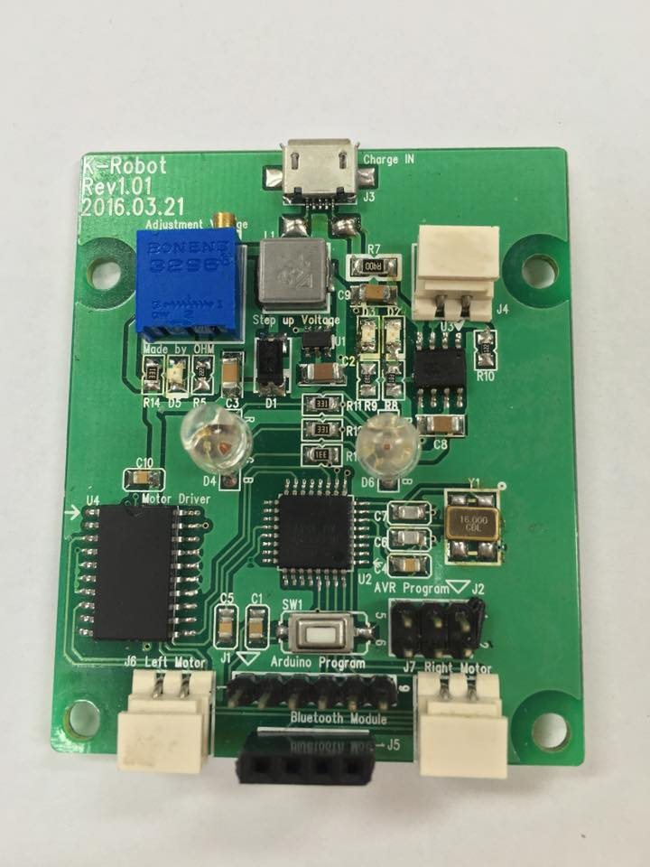
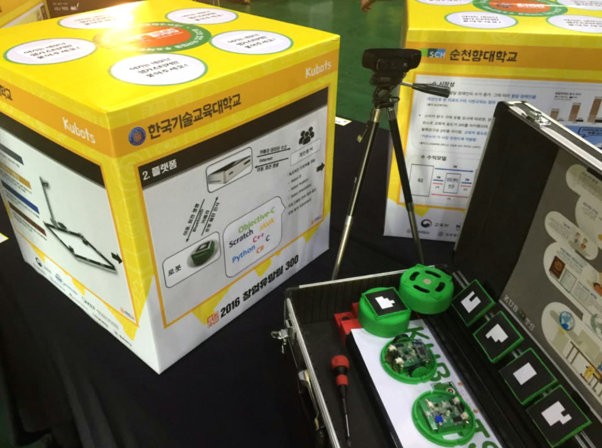
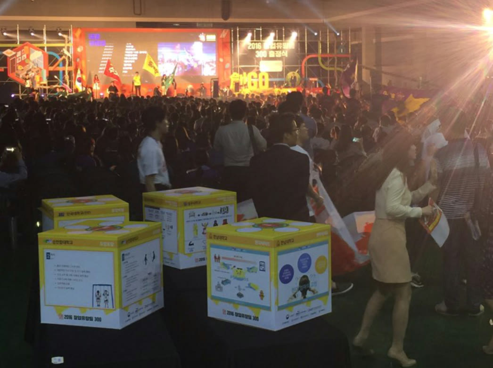
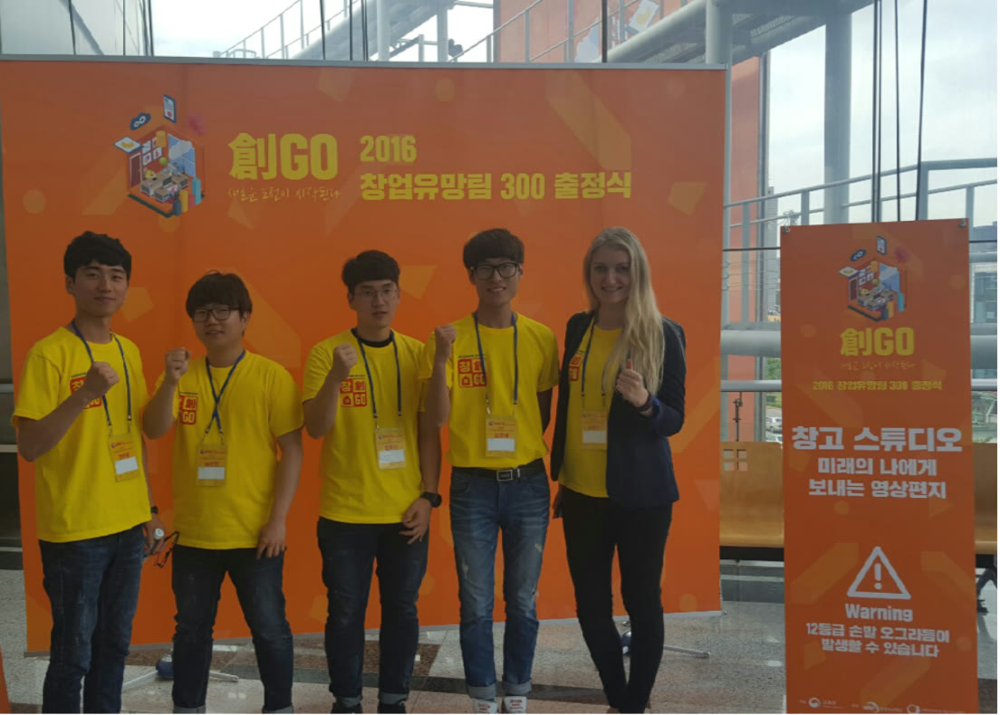

Three versions of Plato Pod.
All three versions track small robots with one overhead camera. With each version, more of the arena moved into software.
Off-the-shelf robots
KoreaTech, South Korea
Built at the Korea University of Technology and Education for teaching programming with robots. Off-the-shelf robots ran in a table-top arena with physical walls and obstacles. An overhead camera tracked them, and their sensor readings were computed from the camera image, so one set-up served a line follower, a maze, a vacuum-cleaner task and a game of tag. The robots ran the Robot Operating System and were programmed over the network.
Team: Junho Heo, Dongyun Kim and Junsu Park, with Artem Lensky. Published as “Educational platform for learning programming via controlling mobile robots”, IEEE Xplore.

An in-house robot
KoreaTech, South Korea
The off-the-shelf robots were replaced by a differential-drive robot designed in-house, 9 cm across and 6 cm high, driven over Bluetooth. A mini PC ran the server. The arena was a frame assembled on a desk, with the camera on a post above it.
Team: Konho Park, Kyongjae Kim, Jongyoun Lim, Raminta Olbutaite and Artem Lensky.







The current platform
UNSW Canberra, Australia
The pods are 85 mm across, each with an ESP32 board, driven over Bluetooth. The arena needs no walls or markers: a pod drives a small circle so the camera can locate the surface, the arena is drawn on screen, and obstacles are virtual. The software adds simulated sensors, hazards, virtual units and an opposing force. Exercises can be followed on ATAK, and the platform has been used in teaching at UNSW Canberra. Since October 2026 it also runs hosted, reached from any browser, with a room by code and a pod per student.
Built by Artem Lensky and Rhianne Chng. See About for today's team.